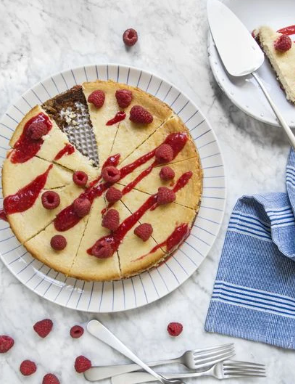

Cheesecake aux speculoos, coulis de framboise
L'association parfaite entre le craquant de la base speculoos, le crémeux du fromage, et l'acidulé du coulis de framboise.

- 12 personnes
- Préparation 25 min
- Cuisson 60 min
Ingrédients
- 300 g de speculoos
- 50 g de beurre
- 1 kg de cream cheese (type Philadelphia)
- 300 g de sucre
- 4 oeufs
- 2 citrons jaunes
- 1 kg de framboises
- 100 g de sucre
Préparation
- Mixez les speculoos et le beurre préalablement fondu. Etalez le mélange au fond d’un moule à manqué de 28 cm de diamètre recouvert de papier sulfurisé. Tassez bien, puis réservez au frais. Prélevez les zestes et récupérez le jus des citrons.
- Préchauffez le four à 170°/th. 5-6. Battez le cream cheese avec le sucre. Ajoutez les œufs, le jus et les zestes de citron, en battant soigneusement entre chaque incorporation. Versez ce mélange dans le moule sur la base speculoos et lissez bien. Enfournez au moins 1 h.
- Mixez les framboises et le sucre jusqu’à obtention d’un coulis lisse. Passez au chinois si besoin et réservez au frais.
- Une fois le cheesecake cuit, laissez-le refroidir à l’air libre avant de le réserver au réfrigérateur jusqu’au moment de déguster. Servez-le avec le coulis de framboise.